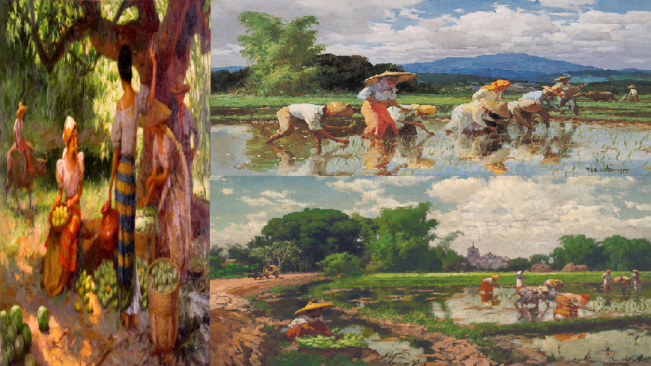
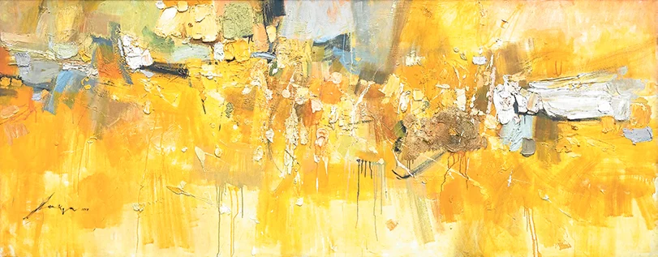
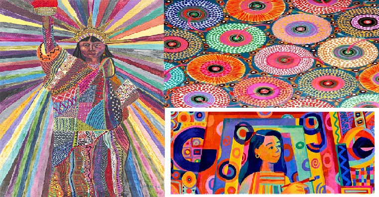
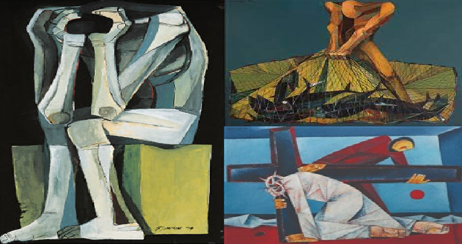
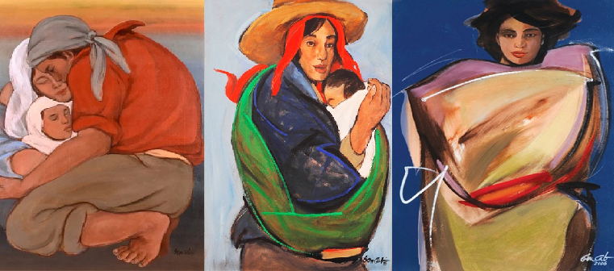
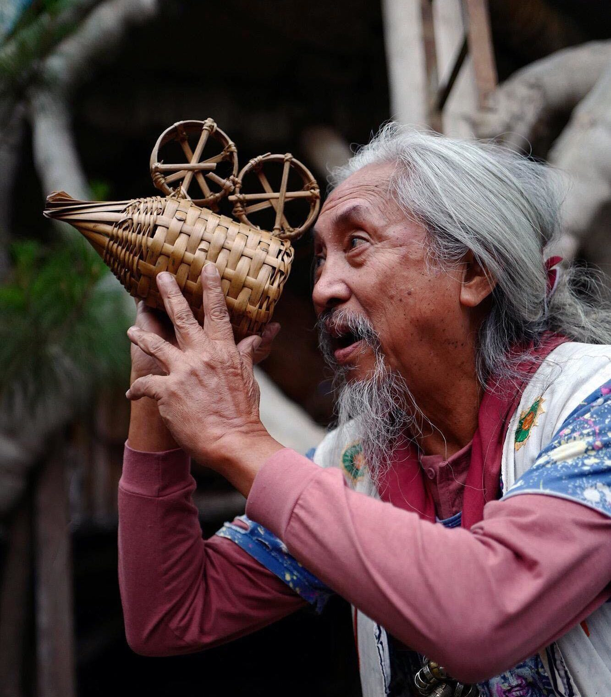
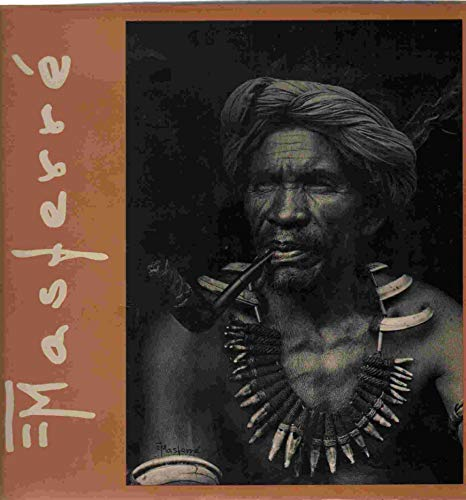
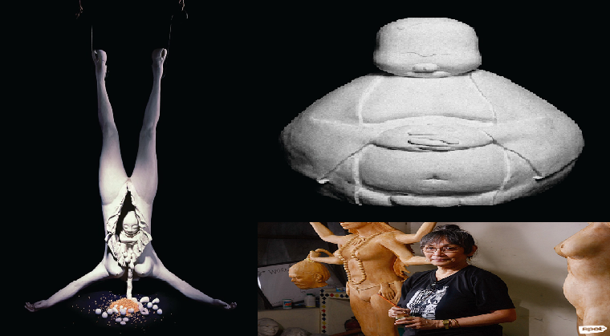
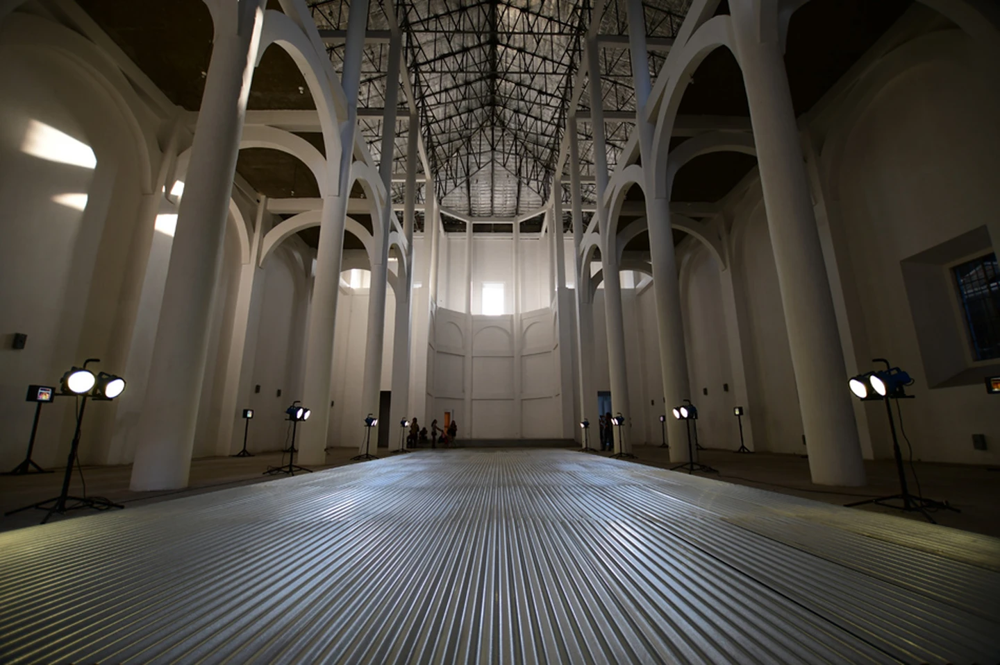

Filipino Artist
Fernando Amorsolo (1892-1972)
Labelled the country’s first National Artist in 1972 by then President Marcos, Fernando Amorsolo is often known as the ‘Grand Old Man of Philippine Art’. The Spanish-trained realist developed a backlighting technique, where his colorful depictions of local people reflect the radiance of the Philippine sun. The figures and illuminated landscapes magically glow on the canvas. Despite his deteriorating health and failing eyesight, he remained prolific until the end, producing up to 10 paintings a month until his death at the age of 80. Amorsolo’s creativity defines the nation’s culture and heritage to this day.
José Joya (1931-1995)
A Filipino pioneer of Abstract expressionism, multi-media painter José Joya uses bold and vibrant colours with a variety of painting techniques, layering, loose impasto strokes and controlled drips. His harmonious colours are influenced by Philippine landscapes and tropical wildlife. His mastery lies in gestural paintings, where the paint is applied spontaneously on canvas, sometimes directly out of the tube or through the use of broad strokes with brushes.
Joya influenced younger artists to explore other mediums such as pottery and printmaking while he served as the Dean of the College of Fine Arts at the University of the Philippines. In 1964, Joya represented the country in the Venice Biennial, showcasing the advancement of modern art in the Philippines.
His most notable painting from 1958, called Granadean Arabesque, is a large scale yellow hued mural that features clusters of sand and impasto. It can be viewed at the Ateneo Art Gallery in Manila.
Granadean Arabesque
Pacita Abad (1946-2004)
Born on the northern island of Batanes, the internationally revered artist first obtained a degree in Political Science at the University of the Philippines. Her staunch activism against the Marcos regime in the 1970s, led her to move to San Francisco to initially study law – but she found her true calling with art. Her paintings consist of vibrant colors and a constant change of patterns and materials. Earlier work dealt with socio-political depictions of people, indigenous masks, tropical flowers, and underwater scenes. Pacita created a unique technique called ‘trapunto’, where she stitches and stuffs her vibrant canvases with a wide range of materials such as cloth, metal, beads, buttons, shells, glass and ceramics, to give her work a three-dimensional look. Her many travels across the globe with her husband have served as an inspiration for the techniques and materials used in her art. Pacita has participated in over 60 exhibitions across the United States, Latin America, and Europe.
She is noted to have worked on more than 5,000 pieces of art – her masterwork being Alkaff Bridge, Singapore, a 55-meter bridge covered in over 2,000 colourful circles. It was completed a few months before she passed away from lung cancer in 2004.
Ang Kiukok (1935-2005)
Born to Chinese immigrants, Ang Kiukok is the pioneer of Philippine modern figurative expressionism. Rewarded as the country’s National Artist in 2001, he was one of the most successful commercial figures on the local art scene from the 1960s until his death from cancer in 2005. Like Amorsolo, his paintings are popular at auctions and have received exceptionally high bids at Sotheby’s and Christie’s. He is known for his distinct cubist and surrealist portrayals of the crucifixion of Christ and mother and child. However, he is acclaimed for his series of Fishermen at Sea, which connects both energy, faith and the struggle of fishermen under a vibrant crimson sun labouring together to bring in the haul for the day.
His notable works are represented in the Cultural Center of the Philippines, the National Historical Museum of Taipei and the National Museum in Singapore.
Benedicto Cabrera (1942-present)
Fondly known as ‘BenCab’ in the Philippines, Cabrera is the best-selling commercial painter of his generation and a prominent head of the local contemporary art scene. He studied under José Joya at the University of the Philippines and received his degree in Fine Arts in 1963. His fruitful career has spanned five decades, where his paintings, etchings, sketches, and prints have been exhibited across Asia, Europe, and the US. He currently resides in the chilly northern hill station of Baguio, where he established his own four-level BenCab Museum on Asin Road that features an eclectic selection of indigenous artifacts, personal works, and an overwhelming collection of paintings from contemporary Filipino artists.
Kidlat Tahimik (1942-present)
A close friend of BenCab and Baguio native is critically acclaimed director Kidlat Tahimik. Known as the father of Philippine independent film, the government recently conferred upon him the Order of National Artist for Film in October 2018. Born Eric de Guia, Kidlat Tahimik means ‘silent lightning’ in Tagalog. Before entering cinema, Kidlat studied at the prestigious University of Pennsylvania’s Wharton School, earning a Masters in Business Administration. His work is associated with Third Cinema, a film movement that denounces neo-colonialism and the capitalist system. His films have been prominent at film festivals across America, Europe, and Asia.
He is highly respected among directors Werner Herzog and Francis Ford Copolla, who were both instrumental in helping him present his most famous semi-autobiographical work Perfumed Nightmare in 1977. The film combines documentary and essay techniques that provide a somewhat humorous but sharp critique of the social divide between the rich and poor in the Philippines.
If you happen to be in Baguio, drop by his artist café and vegetarian restaurant Oh My Gulay, which rests in the heart of Session Road on the fifth floor of the La Azotea Building. The old building does not house an elevator, but the long way up is worth the trip and view. The café is a quirky wonderland of Kidlat’s imagination, featuring wooden bridges, bright blue fish ponds, paintings and native sculptures surrounded by a healthy array of plants. On Assumption Road, he created a massive artist village inspired by his first café, called Ili-likha (or, to create), which is a must-see before leaving Baguio.
Eduardo Masferré (1909-1995)
Further north of Baguio, in the mountainous province of Sagada, Eduardo Masferré was born to a Filipino mother and Spanish soldier. He is regarded as the Father of Philippine photography. He documented with great detail the everyday lives of indigenous people of the Cordilleras. The self-taught photographer processed his own film in a makeshift darkroom and managed to even produce prints without electricity. His photographs capture the culture of the people in his community and serve as a documentation of their customary practices and rituals. Masferré’s photographs have found their way into exhibitions around the world. The Smithsonian Institution carries at least 120 prints of his works for the National Museum of Natural History in Washington D.C.
He is remembered for his book on the People of the Philippine Cordillera Photographs 1934-1956, which was published in 1988. A country inn and café in Sagada is named after him and is worth the visit to see copies of his prints and purchase souvenirs created in Masferré’s honor.
People of the Philippine Cordillera Photographs 1934-1956
Agnes Arellano (1949-present)
Born to a family of prominent male architects, sculptress Agnes Arellano is best known for her surrealist and expressionist work in plaster, bronze and cold-cast marble. Her sculptures highlight the female body and draw from themes surrounding sexuality, religion, and mysticism. Borrowing from the term of poet Gerard Manley Hopkins, Agnes attributes her work to ‘inscapes’, that assert an internal unity among various elements in her installations and sculptures. Drawing from the tragic death of her parents and sister from a house fire in 1981, her work explores themes of creation and destruction, and the cycles of life from birth to death.
Roberto Chabet (1937-2013)
Born Roberto Rodriguez, he used his mother’s maiden name Chabet when he began his career in art. He was a mentor to many students at the University of the Philippines, where he taught for over 30 years, and is acknowledged as the father of conceptual art in the Philippines. Chabet initially studied architecture but his conceptual art installations, collages, and sculptures in the 1960s and 70s made him a rebellious figure on the local art scene. He was the founding museum director of the Cultural Center of the Philippines from 1967-1970, where he established the 13 Artists Awards that highlight the achievements of young artists whose works show a contemporary view of art-making and thinking.
Roberto Chabet’s ‘Onethingafteranother’, at the Mission House, Manila Biennale 2018 | © Mark Demayo
He describes himself as a “custodian” and his work as “creatures of memory”. His multi-faceted skills in drawing, sculpture, installations, photography, printmaking, and collages question modernity. His works reflect the importance of space and how the displacement of ordinary objects can alter their meaning.
Napoleon Abueva (1930-2018)
Noted as the Father of Modern Filipino sculpture, Abueva attended the University of the Philippines with Joya and was mentored by noted sculptor Guillermo Tolentino, at the College of Fine Arts. Born in Bohol, he is also the youngest National Artist awardee appointed by then President Marcos, at the age of 46. His expertise was seen in a wide array of materials such as hard wood, abode, steel, cement, marble, and bronze.
Abueva is adept in traditional representation and modern abstract forms of sculpture. A trip around the University of the Philippines will show you a number of his works, such as the University Gateway and Nine Muses near the old faculty centre. He was also responsible for the relief marble sculptures seen in the war memorial cross in Mt. Samat, Bataan.
It is the second highest cross in the world and the tallest in Asia. Under the commission of the Philippine government, Abueva collaborated with designer Lorenzo del Castillo to create a shrine that commemorates the thousands of Filipino and American soldiers who lost their lives during the Japanese-led Bataan Death March in 1942. Make sure to walk up the flight of stairs inside the cross to reach the top, and experience the fabulous views of Bataan.

Reference:
https://theculturetrip.com/philippines/articles/the-10-most-famous-filipino-artists-and-their-masterworks/